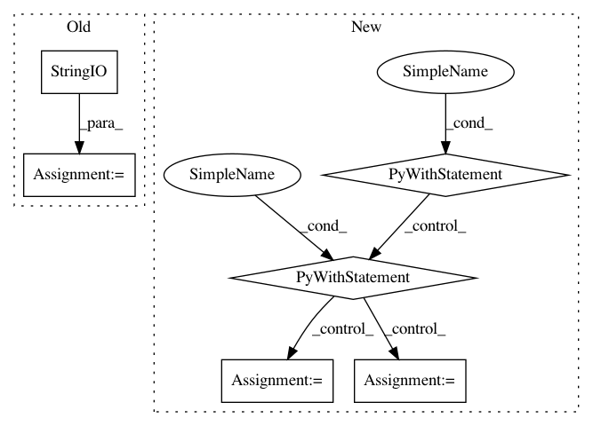

39fb7b5b96ea46aca94099d166106365eaf0647e,lib/matplotlib/tests/test_backend_ps.py,,test_savefig_to_stringio,#Any#Any#Any#,49
Before Change
fig, ax = plt.subplots()
buffers = [
six.moves.StringIO(),
io.StringIO(),
io.BytesIO()]
if use_log:
ax.set_yscale("log")
ax.plot([1, 2], [1, 2])
ax.set_title(u"Déjà vu")
for buffer in buffers:
fig.savefig(buffer, format=format)
values = [x.getvalue() for x in buffers]
if six.PY3:
values = [
After Change
fig, ax = plt.subplots()
with io.StringIO() as s_buf, io.BytesIO() as b_buf:
if use_log:
ax.set_yscale("log")
ax.plot([1, 2], [1, 2])
ax.set_title("Déjà vu")
fig.savefig(s_buf, format=format)
fig.savefig(b_buf, format=format)
s_val = s_buf.getvalue().encode("ascii")
b_val = b_buf.getvalue()
// Remove comments from the output. This includes things that could
// change from run to run, such as the time.
s_val, b_val = [re.sub(b"%%.*?\n", b"", x) for x in [s_val, b_val]]
assert s_val == b_val.replace(b"\r\n", b"\n")
def test_patheffects():
with matplotlib.rc_context():
matplotlib.rcParams["path.effects"] = [
patheffects.withStroke(linewidth=4, foreground="w")]
In pattern: SUPERPATTERN
Frequency: 3
Non-data size: 6
Instances
Project Name: matplotlib/matplotlib
Commit Name: 39fb7b5b96ea46aca94099d166106365eaf0647e
Time: 2018-03-08
Author: anntzer.lee@gmail.com
File Name: lib/matplotlib/tests/test_backend_ps.py
Class Name:
Method Name: test_savefig_to_stringio
Project Name: facebookresearch/ParlAI
Commit Name: 37f58cc580da8735ae5a259d4cb4ba0b8701e78e
Time: 2019-02-08
Author: roller@fb.com
File Name: tests/test_pytorch_data_teacher.py
Class Name: TestPytorchDataTeacher
Method Name: test_valid_pyt_batchsort
Project Name: facebookresearch/ParlAI
Commit Name: 37f58cc580da8735ae5a259d4cb4ba0b8701e78e
Time: 2019-02-08
Author: roller@fb.com
File Name: tests/test_pytorch_data_teacher.py
Class Name: TestPytorchDataTeacher
Method Name: test_pyt_preprocess